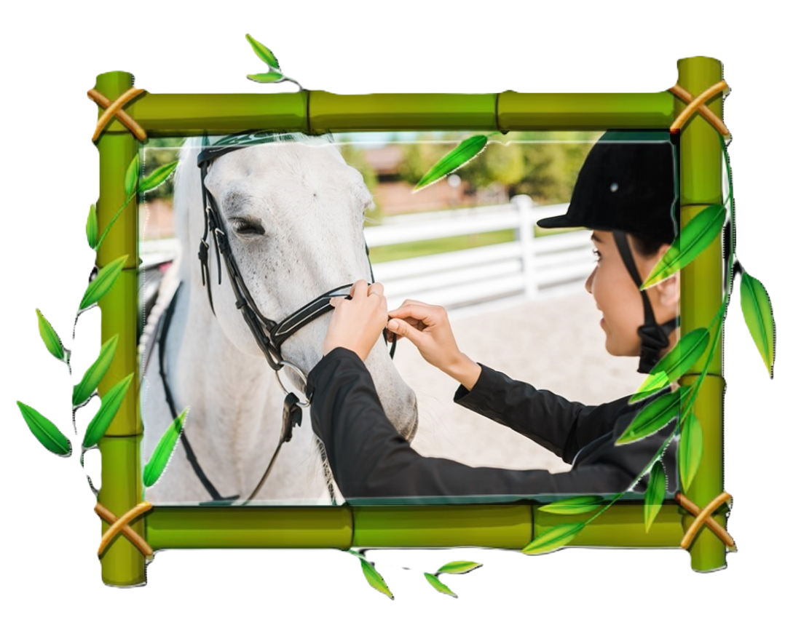
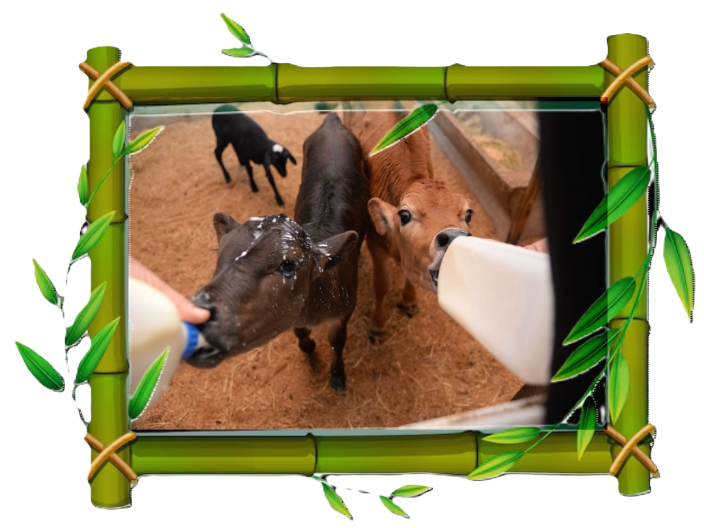
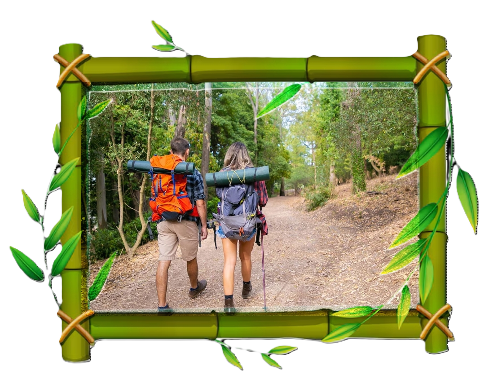
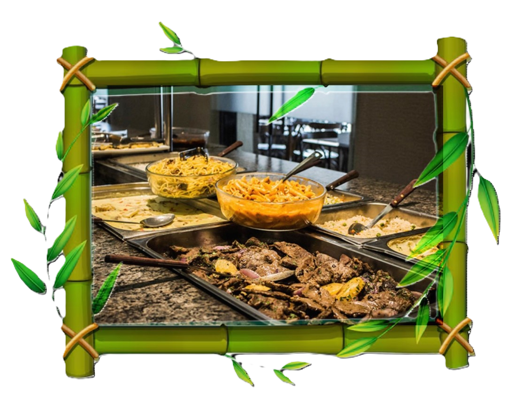

|
 |
passeio a cavalo
o paseio cmc no curral passando pela trilha |
|
 |
Animais
os animais estarão a disposição para |
|
 |
trilha
a trilha se inicia as 15:00 horas |
|
 |
horario de almoço
o almoço ocorre das 11:00 as 13:00 |